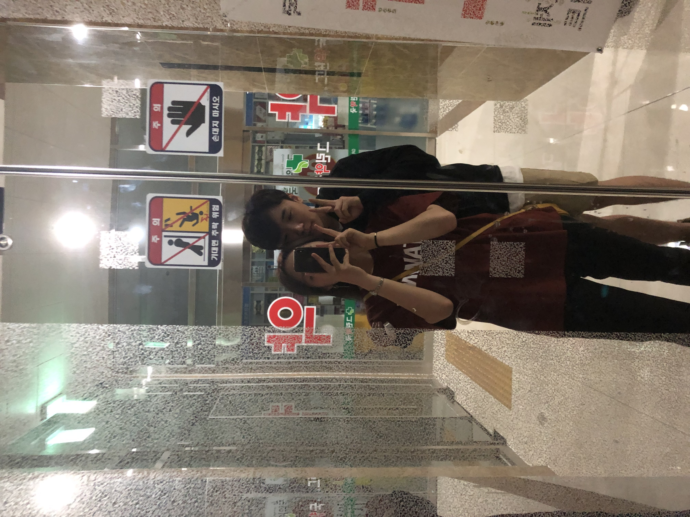

- 김민준의 귀여움
- 김민준의 섹시함
- 김민준의 잘생김
- 김민준의 사랑스러움
김민준의 사랑스러움
김민준은 너무 사랑스럽다.
너무도 사랑스럽고 사랑스럽다. 우리의 연애도 사랑스럽다

이 풋풋하고 아름다운 사진은 내가 염색을 하고 문화동 세이 앞의
코인노래방에 가면서 찍은 사진이다 너무 풋풋하다
하지만 이 중에도 가장 중요하고도 중요한 사실이 남아있다
사랑스러움이 뭐라고 생각하는가
나는 사랑스러움이란 사람을 웃길 때 사랑스럽다는 생각을 하기도 한다
스타트업의 김선호 표정을 했을 때 나는 웃었고
그때 또 사랑스러움을 느꼈다.
똑같지 않은가
ㅋㅋㅋㅋㅋㅋㅋㅋㅋㅋㅋㅋㅋㅋㅋㅋㅋㅋㅋㅋㅋㅋㅋㅋㅋ
민준아 사랑해